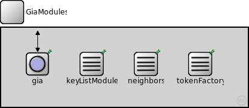
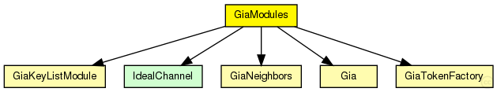
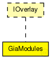

This documentation is released under the Creative Commons license
This documentation is released under the Creative Commons licenseImplementation of the Gia overlay as described in "Making Gnutella-like P2P Systems Scalable" by Yatin Chawathe, Sylvia Ratnasamy, Lee Breslau, Nick Lanham and Scott Shenker, published in "In Proc. ACM SIGCOMM (Aug. 2003)".
Author: Robert Palmer
The following diagram shows usage relationships between types. Unresolved types are missing from the diagram. Click here to see the full picture.
The following diagram shows inheritance relationships for this type. Unresolved types are missing from the diagram. Click here to see the full picture.
| Name | Direction | Size | Description |
|---|---|---|---|
| udpIn | input |
gate from UDP |
|
| udpOut | output |
gate to UDP |
|
| tcpIn | input |
gate from the TCP layer |
|
| tcpOut | output |
gate to the TCP layer |
|
| appIn | input |
gate from application |
|
| appOut | output |
gate to application |
| Name | Type | Default value | Description |
|---|---|---|---|
| gia.rpcUdpTimeout | double |
default timeout value for direct RPCs |
|
| gia.rpcKeyTimeout | double |
default timeout value for routed RPCs |
|
| gia.optimizeTimeouts | bool |
calculate timeouts from measured RTTs and network coordinates |
|
| gia.rpcExponentialBackoff | bool |
if true, doubles the timeout for every retransmission |
|
| gia.localPort | int |
UDP port for overlay messages |
|
| gia.debugOutput | bool |
enable debug output |
|
| gia.keyLength | int |
overlay key length in bits |
|
| gia.nodeId | string |
optional nodeId as string in hexadecimal notation |
|
| gia.useCommonAPIforward | bool |
enable CommonAPI forward() calls |
|
| gia.drawOverlayTopology | bool |
draw arrow to successor node? |
|
| gia.hopCountMax | int |
maximum number of overlay hops |
|
| gia.recNumRedundantNodes | int |
numRedundantNodes for recursive routing |
|
| gia.joinOnApplicationRequest | bool |
only join the overlay on application request |
|
| gia.collectPerHopDelay | bool |
delay statistics for single hops |
|
| gia.routeMsgAcks | bool |
use RPCs for route messages |
|
| gia.lookupRedundantNodes | int |
number of next hops in each step |
|
| gia.lookupParallelPaths | int |
number of parallel paths |
|
| gia.lookupParallelRpcs | int |
number of nodes to ask in parallel |
|
| gia.lookupVerifySiblings | bool |
true, if siblings need to be authenticated with a ping |
|
| gia.lookupMajoritySiblings | bool |
true, if sibling candidates are selected by a majority decision if using parallel paths |
|
| gia.lookupMerge | bool |
true, if parallel Rpc results should be merged |
|
| gia.lookupFailedNodeRpcs | bool |
communicate failed nodes |
|
| gia.lookupStrictParallelRpcs | bool |
limited the number of concurrent rpcs to parameter parallelRpcs |
|
| gia.lookupUseAllParallelResponses | bool |
merge all parallel responses from earlier steps |
|
| gia.lookupNewRpcOnEveryTimeout | bool |
send a new RPC immediately after an RPC timeouts |
|
| gia.lookupNewRpcOnEveryResponse | bool |
send a new RPC after every response, even if there was no progress |
|
| gia.lookupFinishOnFirstUnchanged | bool |
finish lookup, if the last pending RPC returned without progress |
|
| gia.lookupVisitOnlyOnce | bool |
if true, the same node is never asked twice during a single lookup |
|
| gia.lookupAcceptLateSiblings | bool |
if true, a FindNodeResponse with sibling flag set is always accepted, even if it is from a previous lookup step |
|
| gia.routingType | string |
default routing mode (iterative, semi-recursive,...) |
|
| gia.rejoinOnFailure | bool |
rejoin after loosing connection to the overlay? |
|
| gia.sendRpcResponseToLastHop | bool |
needed by KBR protocols for NAT support |
|
| gia.recordRoute | bool |
record visited hops on route |
|
| gia.dropFindNodeAttack | bool |
if node is malicious, it tries a findNode attack |
|
| gia.isSiblingAttack | bool |
if node is malicious, it tries a isSibling attack |
|
| gia.invalidNodesAttack | bool |
if node is malicious, it tries a invalidNode attack |
|
| gia.dropRouteMessageAttack | bool |
if node is malicious, it drops all received BaseRouteMessages |
|
| gia.measureAuthBlock | bool |
if true, measure the overhead of signatures in rpc messages |
|
| gia.restoreContext | bool |
if true, a node rejoins with its old nodeId and malicious state |
|
| gia.maxNeighbors | int |
maximum number of neighbors |
|
| gia.minNeighbors | int |
minimum number of neighbors |
|
| gia.maxTopAdaptionInterval | double |
maximum topology adaption interval |
|
| gia.topAdaptionAggressiveness | int |
topology adaption aggressiveness |
|
| gia.maxLevelOfSatisfaction | double |
maximum level of satisfaction |
|
| gia.maxHopCount | int |
maximum TTL for sent messages |
|
| gia.messageTimeout | double |
message timeout |
|
| gia.neighborTimeout | double |
neighbor timeout |
|
| gia.sendTokenTimeout | double |
token timeout |
|
| gia.tokenWaitTime | double |
delay when sending new token |
|
| gia.keyListDelay | double |
delay when sending new key list to our neighbors |
|
| gia.updateDelay | double |
delay between two update messages |
|
| gia.outputNodeDetails | bool |
output node details |
|
| gia.optimizeReversePath | bool |
use optimized reverse path? |
// // Implementation of the Gia overlay as described in // "Making Gnutella-like P2P Systems Scalable" // by Yatin Chawathe, Sylvia Ratnasamy, Lee Breslau, Nick Lanham // and Scott Shenker, published in "In Proc. ACM SIGCOMM (Aug. 2003)". // @author Robert Palmer // module GiaModules like IOverlay { gates: input udpIn; // gate from UDP output udpOut; // gate to UDP input tcpIn; // gate from the TCP layer output tcpOut; // gate to the TCP layer input appIn; // gate from application output appOut; // gate to application submodules: gia: Gia { parameters: @display("p=60,60;i=block/circle"); } keyListModule: GiaKeyListModule { parameters: @display("p=150,60;i=block/table"); } neighbors: GiaNeighbors { parameters: @display("p=240,60;i=block/table"); } tokenFactory: GiaTokenFactory { parameters: @display("p=330,60;i=block/table"); } connections allowunconnected: udpIn --> gia.udpIn; // connect udpIn with gia.udpIn udpOut <-- gia.udpOut; // connect to_upd with gia.udpOut appIn --> gia.appIn; // connect appIn with gia.appIn appOut <-- gia.appOut; // connect appOut with gia.appOut }
This documentation is released under the Creative Commons license